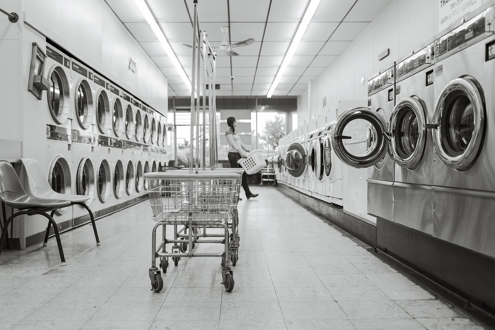
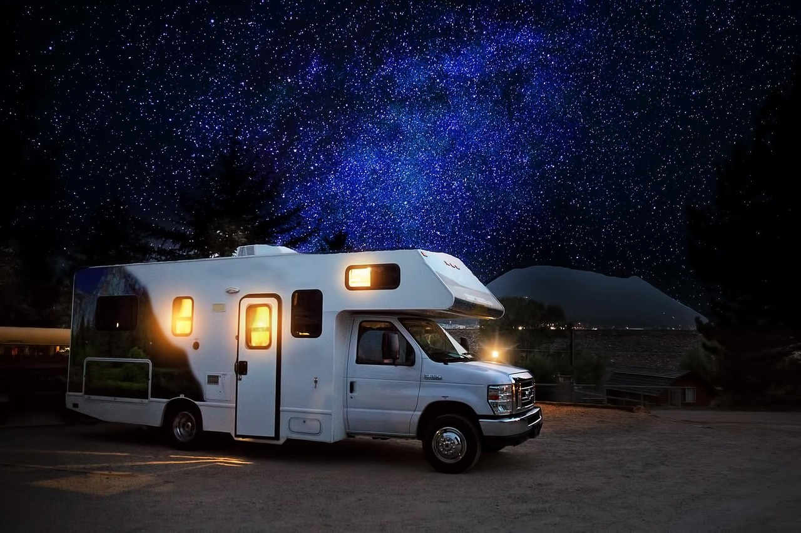
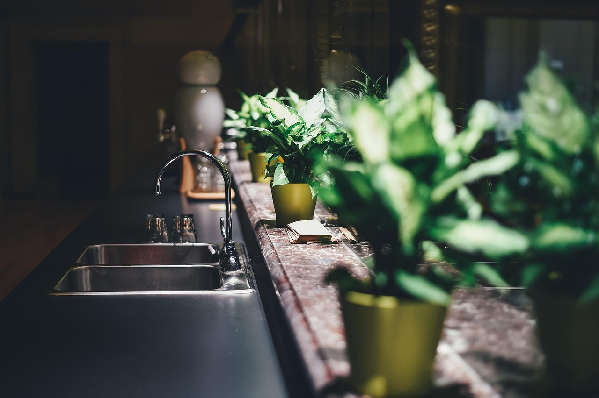
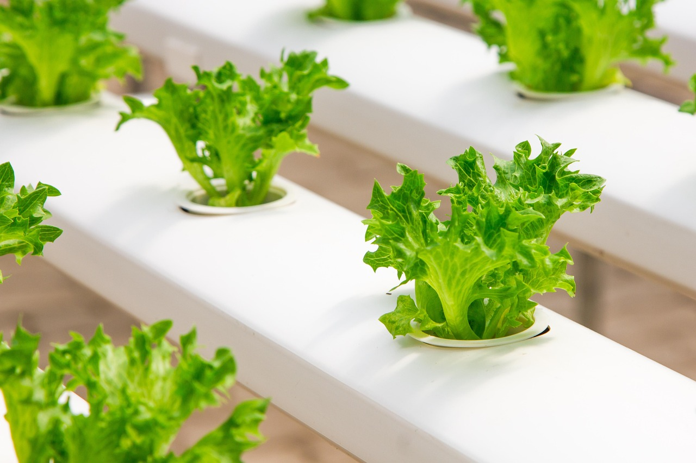

Where Professionals Use DI Water for Cleaning
From window cleaning to marine detailing, deionized water delivers superior results across a wide range of industries and applications.
Window Cleaning
Streak-free glass every time using water-fed poles and pure DI water. No squeegees, no chemicals.
Auto Detailing
The spot-free final rinse that professional detailers trust for showroom-quality finishes.

Solar Panel Cleaning
Restore up to 25% efficiency lost to mineral film and environmental buildup.

Pressure Washing
DI water as the streak-free final rinse after pressure washing buildings and surfaces.
Fleet & Vehicle Washing
Keep branded commercial vehicles looking professional with spot-free wash programs.

Building Facades
Glass curtain walls, architectural surfaces, and high-rise exteriors — cleaned without residue.
Boat & Marine
Protect gel coat and prevent saltwater mineral corrosion with pure DI water rinses.

RV & Camper
Spot-free cleaning for motorhomes, travel trailers, and campers — road-ready every time.

Commercial Kitchen
Spot-free glassware, spotless stainless steel, and sanitary food prep surfaces.

Hydroponics & Greenhouse
Flush irrigation lines and prevent mineral clogs for healthier plants and higher yields.